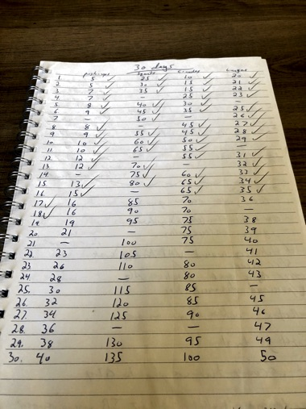
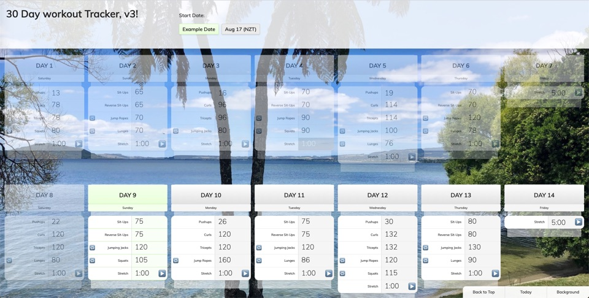

What exactly is it?
I've never been a gym workout type of guy, but during covid-19 isolation one of the topics with friends and family was how to stay active. The 30 day challenge idea came up and we decided to give it a shot. A schedule was made, and off we went.

But a piece of paper? That's not fun. Something better could be put together to digitize this:

Leveraging the obvious timeline of it "ending" after 30 days, multiple versions were made to improve the experience and features over the 3 months.
The original feature list
- Mobile friendly
- Easy to know which day it is
- Because of multiple groups starting on different days (and timezones) different start days
- Single day view
- Sets to break down the activity
- Check off activity (or set) as you go
- Shortcut links if you're looking on a phone
- New background image curated from my photos
V2 improvements
- Visual refinements
- Variable activity counts
- Stopwatch for timed activities
- Introduced usage of
localStorage to remember what you checked off with a lightweight memory solution
- Even deeper set breakdowns
- New set of background images
V3 improvements
- More visual refinements
- "Alternative activity" swap to choose
How does it work?
What did I learn?